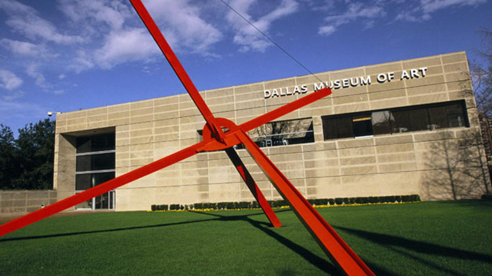
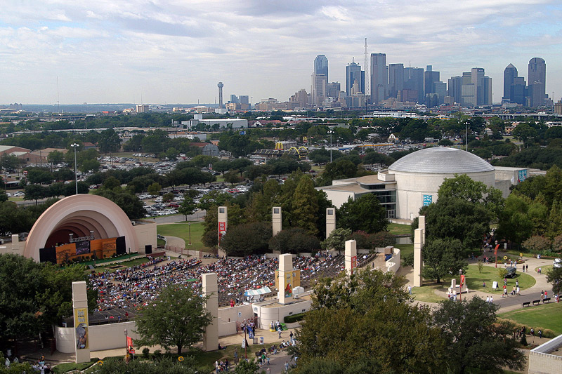
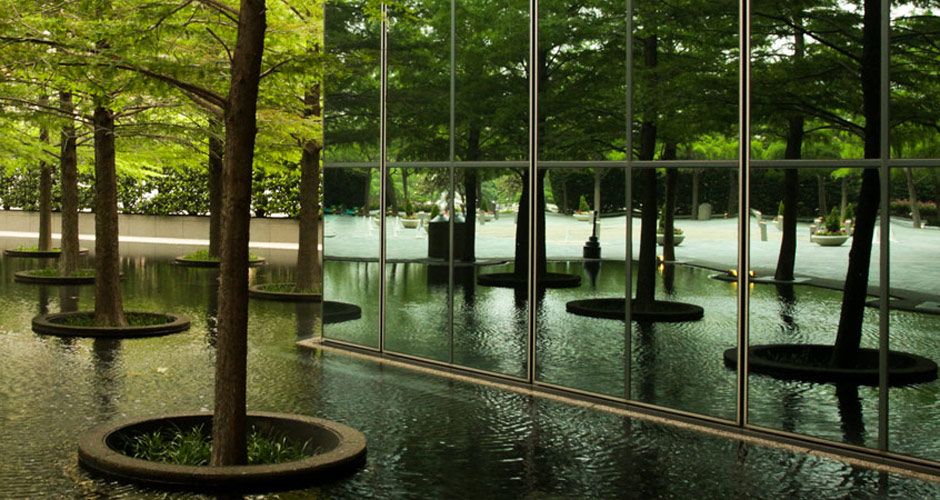

This was created as one of my projects for my Udacity Nanodegree in Front End Development. The requirements for this were: research Google Maps API and Wikipedia API, learn KnockoutJS, review jQuery, Bootstrap, and CSS and put everything together.

Beautiful sculpture outside the Museum of Art

Amphitheatre at Fair Park

Awesome architecture at the ground floor of Fountain PlaceRight across from the Museum of ArtIconic stained-glass in the Thanksgiving Square ChapelExciting design and one of the best museums in Dallas